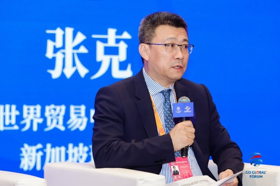
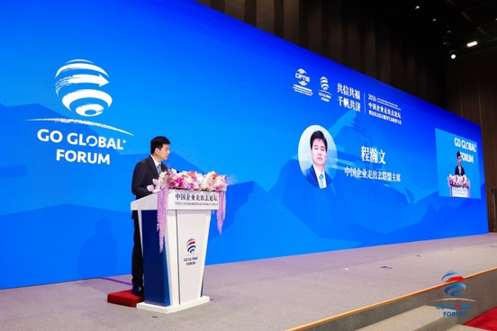
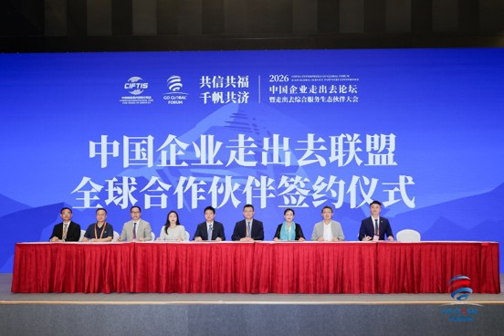
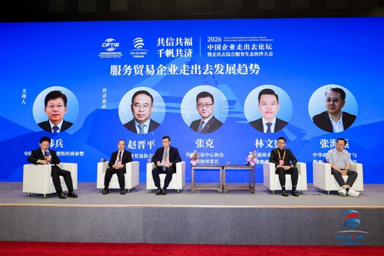

On the afternoon of 11 September 2026, at Beijing's Shougang International Convention and Exhibition Center, the 2026 China Enterprises Going Global Forum — held alongside the Going-Global Integrated Service Ecosystem Partners Conference — convened under the banner “Shared Trust, Shared Prosperity: A Thousand Sails Advancing Together.” Blake Zhang, Chairman of WTC Singapore and Chairman of Baker Capital Group, attended as a guest of honour. He witnessed and completed the signing that named WTC Singapore a “Going-Global Global Ecosystem Partner,” and shared his first-hand observations on how Chinese services companies are expanding overseas. On the stage of CIFTIS, it was WTC Singapore's way of handing Chinese enterprises a calling card to a global network.
01 A Gathering of Leaders — An Industry Summit on High-Quality Global Expansion
The forum was hosted by the China Enterprises Going Global Alliance. Sha Zukang, former UN Under-Secretary-General; Tang Wenhong, Vice Mayor of Beijing; and Cheng Hanwen, Chairman of the Alliance, attended the opening ceremony and delivered remarks. Long Yongtu, former Vice Minister of Foreign Trade and Economic Cooperation and former Secretary-General of the Boao Forum for Asia, and Zhao Ping, President of the CCPIT Research Institute, gave keynote addresses on high-quality development, global supply chains and cultural export, offering guidance to Chinese companies pursuing global growth. The forum also unveiled a slate of major deliverables: a new release of the Going-Global Integrated Service Platform, the Going-Global book series, a global intangible cultural heritage exhibition, the Going-Global Business School, and the first closing of the Going-Global Fund. A full-chain service ecosystem for overseas expansion is rapidly taking shape.

02 A Landmark Signing — WTC Singapore Becomes a Going-Global Global Ecosystem Partner
During the results-release and strategic signing session, WTC Singapore was formally named a “Going-Global Global Ecosystem Partner.” Signing on behalf of WTC Singapore, Chairman Blake Zhang plugged the World Trade Centers Association's mature global business network into the domestic going-global service system. Together with the China Enterprises Going Global Alliance and partners across the ecosystem, WTC Singapore will help build a service channel carrying Chinese companies into global markets.

03 High-Level Dialogue — Blake Zhang: Trust Is Fundamental; Connect Network to Network
In the high-level dialogue on “Trends in Services Companies Going Global,” Han Bing, former Minister-Counsellor for Commercial Affairs at the Chinese Embassy in Egypt, put a question to Zhang: when Chinese services companies expand overseas, what do they lack most in business matchmaking and in building local trust — and how can a global network help them avoid costly detours?
Chairman Blake Zhang opened with a fact that is often overlooked. China is a huge exporter of goods, yet at the same time the world's second-largest importer of services — “exports of goods and exports of services are strikingly out of balance.” The United Kingdom, a long-established trading power, by contrast is already the world's second-largest exporter of services.

In his view, the root cause of that imbalance is a shift in the underlying logic of global trade. Where it once rested on the movement of goods and tariff arbitrage, today it demands the deep integration of capital, innovation and markets. “To get there, you have to build links faster and more widely — and they have to be trusted links.”
“Trust is fundamental,” Zhang stressed. Building an overseas network from scratch is expensive, slow and simply unrealistic. The World Trade Centers Association, however, operates World Trade Centers in more than 90 countries and 320 cities, nurturing over one million quality corporate members. The best approach, then, is not to reinvent the wheel but to “connect network to network” — and to build super-connections quickly. That, he said, is precisely the core value WTC Singapore and Baker Capital bring to Chinese companies going global.
04 About WTC Singapore
Singapore is a global hub for finance, international trade and innovation. As the World Trade Centers Association's member organisation in Singapore, WTC Singapore operates through three business pillars — WTC ONE Club, an executive business club; GlobalX, the go-global accelerator; and WTC FUND, the international investment fund. By connecting capital, industry and innovation resources, it gives Chinese enterprises one-stop support: local credibility and endorsement, overseas business matchmaking, cross-border investment and financing, and on-the-ground market entry.
From “going out” to “going in — and going steady,” WTC Singapore aims to link its global network with China's strength, helping more companies avoid the detours and set sail with confidence.